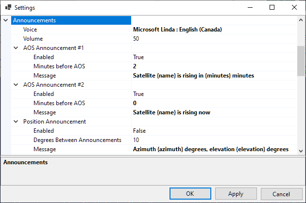

Setting Up Voice Announcements
SkyRoof can make voice announcements of the the satellite AOS events and position changes. Up to two AOS announcements may be enabled.
Click on Tools / Settings in the main menu to open the Settings window:

- Voice - select one of the voices available on your system. To install a new voice package in Windows, go to Settings > Time & language > Speech and then select Add voices to download and install the desired voice package.
- Volume - set the volume between 1 and 100;
- Enable - enable or disable the announcement;
- Minutes Before AOS: enter 0 to 5 minutes;
- Degrees Between Announcements: 1° to 30°. Satellite position is announced when the angular distance between the previous and current positions exceeds this value;
- Message - enter the announcement message. For the satellite name enter
{name}, for the number of minutes before AOS enter{minutes}, for the azimuth and elevation enter{azimuth}and{elevation}respectively.